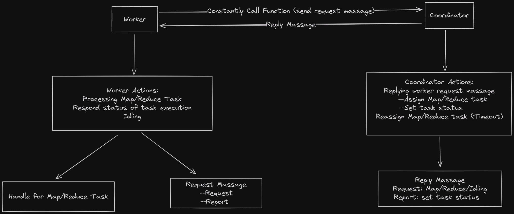

Last updated on a year ago
Lab 1
Prerequisite
在具体开始写代码之前需要先将官方提供的 实验文档
全部认真看一遍，除此之外还需要详细理解 MapReduce
这个实验的难点在于 Master/Coordinator 与
Worker 之间需要交流哪些信息以及 Coordinator
需要维护哪些信息。由于实验只给出了最基本的 RPC
调用示例，关于 MapReduce
的部分几乎没有代码，因此可以自由发挥的空间十分的大（换句话说，也就是无从下手）
Design
Worker Actions
对于 Worker 而言：
向 Coordinator 请求任务
执行 Map/Reduce Task 或者处于空闲状态
向 Coordinator 报告 Task 是否执行完毕
Worker 的行为有两种：请求任务和报告信息，因此
Coordinator 需要提供两个函数供 Worker 调用
关于 Map Task 和 Reduce Task：
由于本实验的输入文件全部给出，因此我们不需要按照论文当中说的对输入文件进行分割
Coordinator 通过将输入文件名发送给
Worker，之后 Worker 便可以读取该文件Map Task 的数量是固定的，就是输入文件数；而
Reduce Task 则可以由用户进行指定（在
mrcoordinator.go 中）假设 Map Task 的数量为 \(X\) ，Reduce Task 的数量为
\(Y\) ，那么会产生的中间文件个数为 \(XY\) ，每个中间文件用 mr-i-y
表示（这里 i 表示 Map Task
的编号，j 表示 Reduce Task 的编号）
对于编号为 \(y\) 的
Reduce Task 而言，它需要读取所有 mr-i-j
的文件
对于每个中间文件，我们可以使用 os.CreateTemp
在当前路径 创建临时文件，对文件写入完毕后 使用
os.Rename 来对其进行原子重命名
在我最开始的实现中，我直接使用 os.Create
来创建一个新文件，然后对文件进行写入。但这种设计存在问题，因为如果两个不同的
Worker 执行同一个
Map Task，那么它们产生的中间文件就会同名，这时同一个文件就会被两个
Worker 进行写入
而我们使用临时文件加原子重命名这种方式则可以避免这个问题，因为我们总是在文件写入完毕后对其重命名，因此哪怕有两个相同的
Worker 执行同一个
Map Task，最终的结果也只会生成一个文件，并且不存在两个
Worker 都向这个文件写入的情况
Coordinator Actions
对于 Coordinator 而言：
响应 Worker 的请求，向其分配
Task，并记录信息
对于超时的 Task，重新分配一遍
由于我们采用 RPC 来实现通信，因此 Worker
通过不断调用（也就是轮询） Coordinator
暴露出来的函数来交流信息。由于这个过程中存在多个 Worker
同时执行函数，因此 Coordinator 需要加锁保护数据
需要说明的是，RPC
所使用的消息的输入参数和回复参数当中的字段都需要大写，不然无法读取到正确的数据
Coordinator 需要记录每个 Task
的执行情况，对于那些超时未完成的 Task，需要重新分配一遍
在我的设计中，Worker 每隔 5 秒向
Coordinator 报告一次执行情况用于更新 Task
的时间戳
如果 Coordinator 发现某个 Task
的时间戳于当前时间戳超过 10 秒，那么认为原先执行该
Task 的 Worker 已经
Crash，直接重新分配该任务
Architecture
最后给出整体的框架图：
实现代码：Code

Lab1
Implementation
这里给出详细的实现细节
Coordinator
Definition
我们首先需要定义一些常量用于表示 Task 的状态和类型
1 2 3 4 5 6 7 8 9 10 11 12 13 14 15 16 17 type TaskStatus int type TaskType int const (iota const (iota
Coordinator 并不需要记录每个 Worker
的状态，因为 Worker 仅仅是用于执行不同的任务。如果某个
Worker 崩溃了，那么我们只需要重新分配这个 Task
给那些可以工作的 Worker
执行就好（超时重传的机制可以解决一切问题）
Task Type 并不是只有 Map 和
Reduce，这是因为一个 Worker
可以处于空闲状态，也就是即不执行 Map 也不执行
Reduce，我们需要用 NotAssigned 来进行标识
我们需要记录 Map Task 和 Reduce Task
的信息，定义如下：
1 2 3 4 5 6 7 8 9 10 11 12 13 14 15 16 17 18 type MapInfo struct {string int type ReduceInfo struct {int
如前文所述，Map Task
中只需要记录输入的文件名即可，并不需要将文件的内容也包含在内
Coordinator 的定义如下：
1 2 3 4 5 6 7 8 type Coordinator struct {int int
由于存在并发问题，我们需要使用 Mutex
来保护共享变量。实际上更加 go style 的方式是用
channal，但我还是习惯去用 lock
Request & Response Message
Worker 需要向 Coordinator 请求任务以及向
Coordinator 报告任务执行情况，这分别通过调用
HandleRequest 和 HandleRespond 来实现
我们需要定义如下 RPC 的输入参数以及返回值
1 2 3 4 5 6 7 8 9 10 11 12 13 14 15 16 17 18 19 type RequestArgs struct {type RequestReply struct {int int type ResponseArgs struct {type ResponseReply struct {
由于 Request 消息用于请求任务，因此必须包含
MapInfo 和 ReduceInfo
以及用于标识当前任务的类型
Worker 向 Coordinator
报告任务执行情况时同样需要包含上面这三个变量，而任务的执行情况则在
MapInfo 和 ReduceInfo 中
1 2 3 4 5 6 7 8 9 10 11 12 13 14 15 16 17 18 19 20 21 22 23 24 25 26 27 28 29 30 31 32 33 34 35 func (c *Coordinator) error {for i, e := range c.map_queue_ {if (e.Status_ == NotStart) || (e.Status_ == InProgress && time.Since(c.map_queue_[i].Timestamp_) > time.Second*10 ) {return nil for i, e := range c.reduce_queue_ {if (e.Status_ == NotStart) || (e.Status_ == InProgress && time.Since(c.reduce_queue_[i].Timestamp_) > time.Second*10 ) {return nil return nil
对于所有未分配的 Task，其状态都是
NotStart，一旦分配则将其修改为
InProgress。除非该 Task 完成，否则一直都是
InProgress
在分配 Task 后，我们需要设置该 Task
的时间戳，用于超时重传
1 2 3 4 5 6 7 8 9 10 11 12 13 14 15 16 17 18 func (c *Coordinator) error {if args.Task_types == MapType {if args.Map_task_.Status_ == Completed {if args.Task_types == ReduceType {if args.Reduce_task_.Status_ == Completed {return nil
而对于 Worker 报告的信息，Coordinator
每接收到都需要重新设置该 Task 的时间戳，用于表示执行该
Task 的 Worker 没有崩溃。而如果该
Task 执行完毕，那么将其状态修改为
Completed
Worker
相比之下，Worker 这边的代码稍显复杂
Worker 的行为有：
执行 Map/Reduce Task
报告 Task 的执行情况
我们先给出执行 Map/Reduce Task 的代码
Map/Reduce Task
1 2 3 4 5 6 7 8 9 10 11 12 13 14 15 16 17 18 19 20 21 22 23 24 25 26 27 28 29 30 31 32 33 34 35 36 37 38 39 40 41 42 43 44 45 46 47 func MapFunction (req *RequestReply, mapf func (string , string ) bool {if err != nil {return false if err != nil {return false string (content))map [int ][]KeyValue{}for _, kv := range kva {append (groups[ihash(kv.Key)%req.NReduce_], kv)for i := 0 ; i < req.NReduce_; i++ {"./" , "tmp-mr-" )defer tfile.Close()append (tfile_list, tfile)append (enc_list, json.NewEncoder(tfile))for idx, vals := range groups {for _, kv := range vals {if err != nil {return false for i := 0 ; i < req.NReduce_; i++ {"mr-%d-%d" , req.Map_task_.Task_id_, i)if err := os.Rename(tfile_list[i].Name(), tfilename); err != nil {return false return true
关于 mapf 的调用可以从 mrsequential.go
中偷代码，我们重点需要关注以下几点：
对 mapf 调用完毕后，我们得到的是
[]KeyValue。我们需要对该数组中的元素分配到
nReduce 个 bucket 中，这里我们使用
map 来解决
该函数返回值表示 Map Task
是否成功执行，true 为执行成功，false
为执行失败
在使用 os.CreateTemp
时，第一个参数用于表示临时文件的路径。由于我们在当前文件夹创建临时文件，因此为
"./"
创建文件的格式为
json，这里在官方的文档中有简易的教程
1 2 3 4 5 6 7 8 9 10 11 12 13 14 15 16 17 18 19 20 21 22 23 24 25 26 27 28 29 30 31 32 33 34 35 36 37 38 39 40 41 42 43 func ReduceFunction (req *RequestReply, reducef func (string , []string ) string ) bool {for i := 0 ; i < req.NMap_; i++ {"mr-%d-%d" , i, req.Reduce_task_.Task_id_)if err != nil {return false for {var kv KeyValueif err := dec.Decode(&kv); err != nil {break append (kva, kv)"mr-out-%d" , req.Reduce_task_.Task_id_)defer ofile.Close()0 for i < len (kva) {1 for j < len (kva) && kva[j].Key == kva[i].Key {string {}for k := i; k < j; k++ {append (values, kva[k].Value)"%v %v\n" , kva[i].Key, output)return true
Reduce Task 的执行需要先从中间文件中读取数据。由于每个
Map Task 都会产生 nReduce 个
bucket，因此 Reduce Task 需要从每个
Map Task 所产生的中间文件读取对应编号的文件
全部读取完毕后，需要对其进行排序 。往后的代码就是复制
mrsequential.go 中的了
Main Function
我们直接给出 Worker 的主要代码，其中
CallRequest 和 CallResponse
都是一个封装函数，用于调用 RPC
1 2 3 4 5 6 7 8 9 10 11 12 13 14 15 16 17 18 19 20 21 22 23 24 25 26 27 28 29 30 31 32 33 34 35 36 37 38 39 40 41 42 43 44 45 46 47 48 49 50 51 52 53 54 55 56 57 58 59 60 61 62 63 64 65 func Worker (mapf func (string , string ) func (string , []string ) string ) {var cur_task_type TaskType = NotAssignedvar success_call atomic.Valuefalse )for {switch cur_task_type {case NotAssigned:case MapType:go func () for success_call.CompareAndSwap(false , false ) {5 * time.Second)case ReduceType:go func () for success_call.CompareAndSwap(false , false ) {5 * time.Second)if cur_task_type != NotAssigned && success_call.CompareAndSwap(true , false ) {switch cur_task_type {case MapType:case ReduceType:
唯一需要注意的是在执行具体的 Map/Reduce Task
之前，我们需要先创建一个 goroutine 来定时向
Coordinator 联系，每隔 5
秒发送一次信息，用于避免因 Worker 执行任务耗时太长导致
Coordinator 误以为该 Worker
已经崩溃而重新分配该 Task
一旦 Map/Reduce Task 执行完毕，那么这个
goroutine 也需要停止发送信息。为了保证不出现
race condition，我使用的 atomic.Value 来存储
bool
来实现这一点（这里是一个线程只会写入该变量，另一个线程只会读取该变量，会出现
unrepeatable read）
Store 用于原子地存储值到 atomic.Value
中，而 CompareAndSwap
则用于原子地测试与交换数值，这等价于下面的代码：
1 2 3 4 5 6 7 bool CompareAndSwap (void * old, void * new ) if (*addr == *old) {new return true return false
这里我们同样可以使用 lock 来实现，只需要额外定义一个
Mutex 即可
Summary
第一个实验难度并不算大，只需要把论文当中的的原理理解了就行，难点在于设计
Worker 和 Coordinator
之间的通信。这个实验给我最大的感受就是自由发挥的空间十分的大，官方只给了最基本的框架代码，关于
MR
的部分全靠自己设计，让我有一种自己独立将论文当中的内容给实现出来的成就感